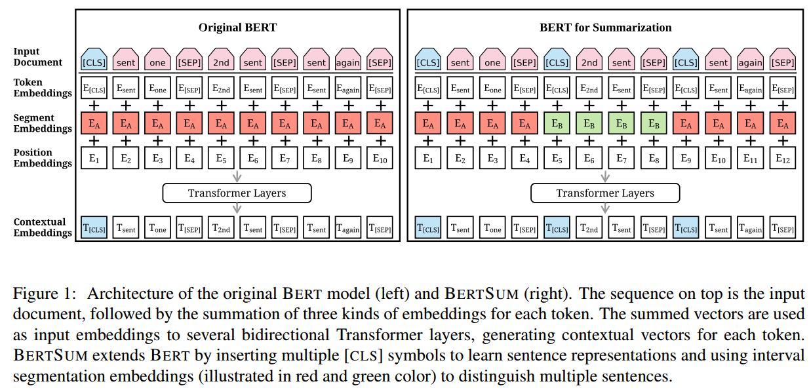
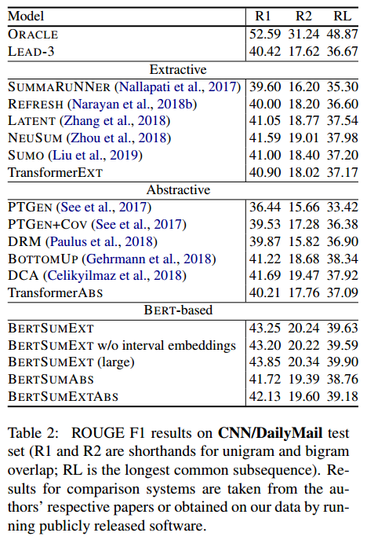
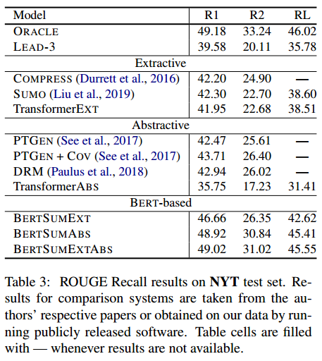
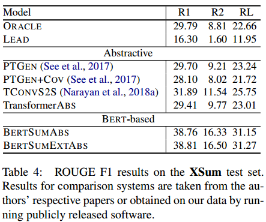

来源：Proceedings of the 2019 Conference on Empirical Methods in Natural Language Processing（EMNLP2019)
一句话不看版：将BERT进行修改用于抽取式和生成式摘要任务。
背景
基于预训练的BERT最近在很多任务上取得了巨大的提升。本文则展示了如何将BERT应用于抽取式与生成式摘要任务。
大多数情况下，预训练语言模型被用来作为encoder对句子或者段落进行编码并理解其语义。然而在摘要任务中，仅仅对个别单词或者句子的理解是不够的，需要更大范围的语义理解。
本文的抽取式方法在BERT encoder的基础上叠加了多层跨句子的Transformer层来捕捉文档级别的特征。
抽取式方法采用encoder-decoder架构，使用同一个预训练的BERT作为encoder，以及随机初始化的Transformer作为解码器。
在多个单文档摘要数据集上进行了实验。并且对摘要的很多特性进行了深入的分析。
Pretrained Language Models
预训练语言模型可以说是扩展了词嵌入的思想，使用语言模型的目标在大规模语料上学习上下文表示。BERT是一个新的语言表示模型，它使用Masked language modeling 和 next sentence prediction 任务在3300M单词的语料上进行训练。

BERT的主要框架如图1左边部分所示。
文本首先被插入两个特殊符号：[CLS]和[SEP]。[CLS]代表句首，这个符号的输出用来聚合整个句子的信息，因此被用来作为整个句子的表示，并用于后续的任务（如分类任务）。[SEP]插在每个句子的结尾，用来标识句子的边界。
然后文本被表示为符号序列：$X=[w_1,…,w_n]$，每个符号$w_i$包括三种嵌入：token embeddings表示符号本身的语义信息；segmentation embeddings用来区别两个不同的句子；position embeddings用来指示每个单词的位置。这三种嵌入加起来得到最终的符号表示$x_i$，然后输入到Transformer中：
$$
\tilde{h}^l = LN(h^{(l-1)}+MHAtt(h^{(l-1)}))
$$
$$
h^{(l)} = LN(\tilde{h}^l + FFN(\tilde{h}^l))
$$
其中$h^0 = x$是输入向量，$LN$是layer normalization，$MHAtt$是多头注意力，上标$l$表示层数。在最上层，模型会为每个符号产生一个输出向量$t_i$，该向量表示蕴含丰富的上下文信息。
预训练语言模型通常被用来强化对于语言的理解任务，最近也有研究利用预训练模型用于生成任务。当对下游具体任务进行微调时，BERT通常会根据下游任务微调时一起调整BERT中的参数。
模型
Summarization Encoder
BERT之所以没有用在摘要上，主要是由于，BERT的输出是单词级别的表示，而不是句子级别的表示。而在抽取式摘要中，通常都是对句子级的表示进行操作。虽然BERT中用到了segmentation embedding来区分句子，但是这种segmentation embedding只用来区分句子对中的两个句子，而在摘要中需要操作多个句子的输入。本文提出的方法见图1的右边部分。
解决方法就是给每个输入句子都插入[CLS]和[SEP]符号，然后用每个句子的[CLS]符号的表示作为句子表示。同时多个句子采用interval segment embeddings来区分文档中多个句子，具体方法是根据句子位置的奇偶来赋予不同地segmentation embedding。同时扩大了position embedding的长度（原始BERT长度为512），并将position embedding在训练的过程中一起训练。
该模型命名为BERTSUM。
Extractive Summarization
抽取式摘要任务定义为：为每个句子预测一个标签{0,1}，表示是否被选为摘要。
在BERTSUM的基础上，得到每个句子的表示（也就是每个句子的[CLS]符号的表示）。然后堆叠句子级的Transformer：
$$
\tilde{h}^l = LN(h^{(l-1)}+MHAtt(h^{(l-1)}))
$$
$$
h^{(l)} = LN(\tilde{h}^l + FFN(\tilde{h}^l))
$$
其中$h^0=PosEmb(T)$；$T$表示BERTSUM得到的句子表示，函数$PosEmb()$给T增加sinusoid positional embeddings，来指示每个句子的位置。
最后使用一个分类层来预测分类：
$$
\hat{y}_ i = \sigma(W_oh_i^L+b_o)
$$
其中$h_i^L$表示句子i在Transformer顶层（第L层）的表示。实验中设置L=2最佳。
Abstractive Summarizaiton
生成式摘要采用encoder-decoder架构。encoder就使用BERTSUM模型，然后decoder使用6层的Transformer。另外由于encoder已经pretrain过了，而decoder没有pretrain过，因此本文提出为encoder和decoder使用不同的optimizer，并设置不同地学习率。
同时本文还实验了将BERTSUM进行双重微调，即先在Extractive Summarization上微调，再在Abstractive Summarization上微调。模型命名为BERTSUMEXTABS。
实验
数据集使用了CNN-DM，NYT，XSum。具体的实现细节参见原文描述。实验结果如表2，3，4所示。



总结
本文的主要创新点在于提出了将BERT用于摘要（both 抽取式 and 生成式）的方法。此外实验部分也比较solid，实验设置值得学习。另外相关工作的介绍也很全面。
只不过仍然是监督式的单文档摘要。对于如何进行无监督的摘要启发不是很大。